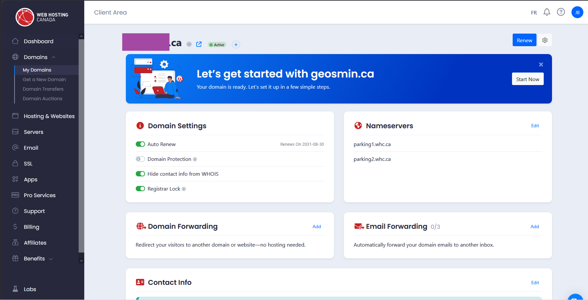
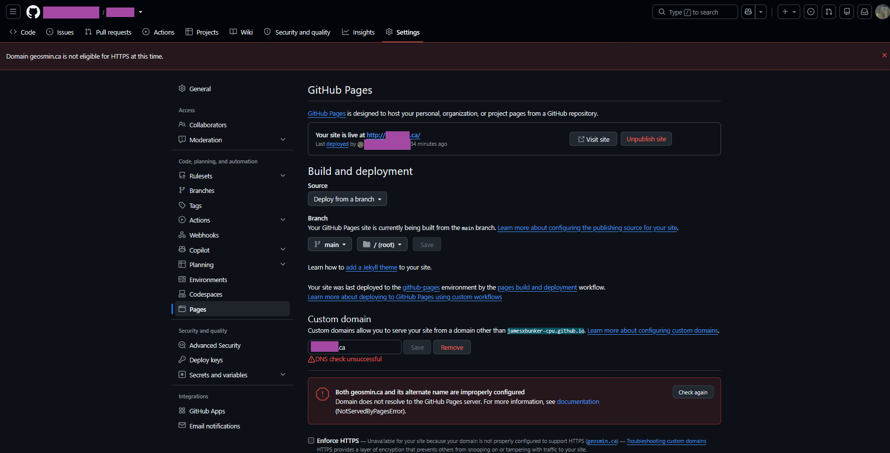
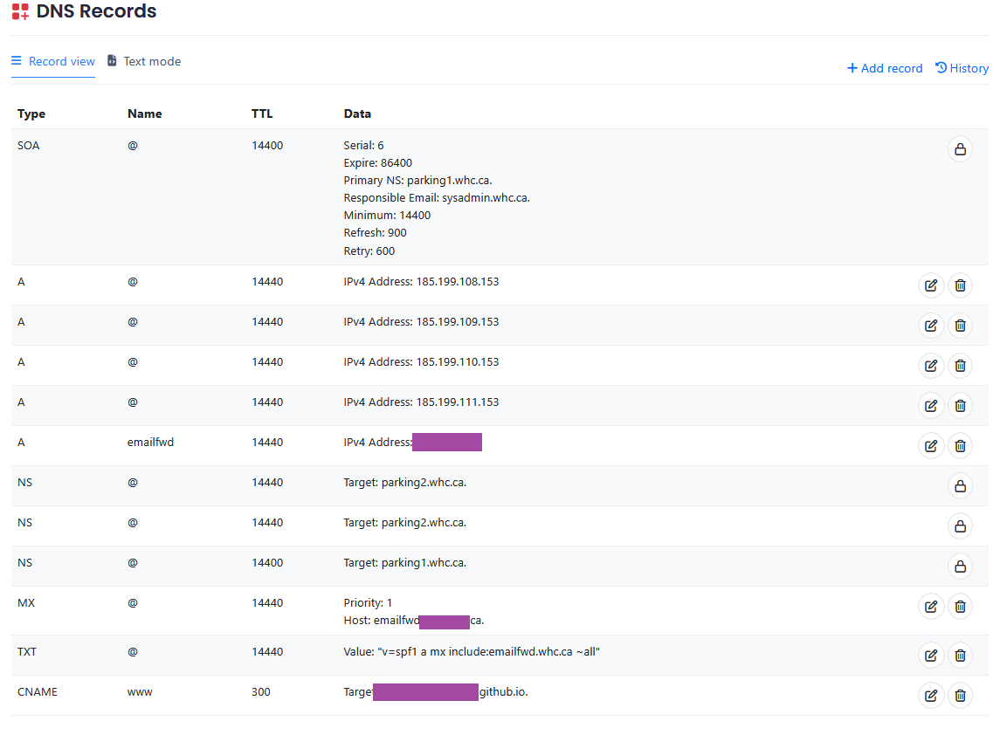
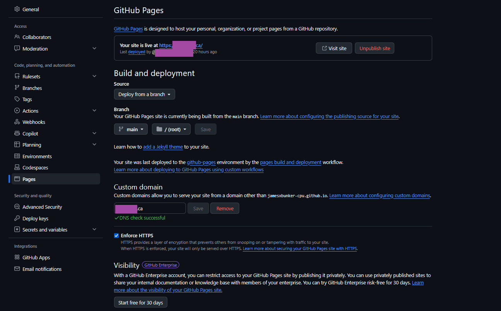

Introduction
Every young developer wants to have their own domain, opening the limitless possibilities of the World Wide Web and all it entails. This is your chance to leave your permanent mark on the internet and be able to access it from virtually anywhere (as long as you keep paying your domain fees and GitHub Pages doesn't stop supporting free use).
Grab your credit card, reading glasses, a funny website name, and we're off to the races!
Background
Feel free to skip this if you don't care for the more technical side. It merely provides a quick explanation of what's going on and unravels a bit of the mystery behind these services.
Domains and DNS
To start simple, a domain is something you have likely heard of, especially if you're wanting to create your own website. This is the address of your site that people will type into their browsers. A domain is associated with an IP address, which allows internet infrastructure to determine where requests for that domain should be sent.
To put it simply, it's like a phone book, where the company name
is the domain name and the cell phone number is the IP address
associated with it. We use IP addresses when working with web
infrastructure because it would be pretty costly to send the
information for
"James' Super Fantastic Website That for Some Reason Has a Long Name"
rather than 39.85.184.171.
Continuing on, DNS (Domain Name System) is the system responsible for translating domain names into IP addresses and directing internet requests to the appropriate destination. The DNS records for your domain are managed through your domain registrar or another DNS provider.
That's about all we need to know for this going forward, so I'll leave it at that. There will likely be a future article delving deeper into DNS when I have time.
DNS Records
This section is more so you aren't blindly following the steps and later struggling to sleep because you have no idea what the man on the internet was actually telling you to do...
Don't worry, we will cover all the changes that will be made to the DNS records here. While I will show you what to do later, I'm going to briefly go into some detail on what records will be changed and what they do.
-
@ IN 14440 A 185.199.108.153The A record, and the ones similar to it, are used to associate a domain with an IPv4 address. We will use four of these because GitHub provides multiple IP addresses for GitHub Pages. This provides redundancy in case one of the servers becomes unavailable.
The
@symbol represents the root, or apex, domain. In this case, it refers toyourwebsite.ca, rather than a specific subdomain such aswww.yourwebsite.ca. -
www IN 300 CNAME your_github_account.github.io.Our site will be hosted with GitHub Pages, and GitHub provides a hostname based on your account name:
your_github_account.github.io.The Canonical Name, or CNAME, record allows the
wwwsubdomain to point to your GitHub Pages site instead of directly specifying an IP address.The
wwwmeans that the visitor enteredwww.yoursite.ca, while the300represents the DNS record's TTL (Time to Live), which specifies how long DNS resolvers may cache the record.
GitHub Pages
This section is very important for anyone who wants a free way
to host a website. GitHub Pages directly serves the static files
that make up your site. If a user requests index.html,
GitHub Pages serves it. There is no server-side application
running behind the scenes to generate the page on demand.
It is important to note that GitHub Pages also provides HTTPS support and automatically manages the SSL/TLS certificate for your custom domain. This is normally a huge headache to deal with, but I can cover that in the future. All you need to know is that it saves us a huge hassle and secures our site for free.
It is very wise to understand that nothing comes for free and big data does collect. In our case, the drawbacks are few and far between, as this is just a simple website.
First, your repository must be public if you're using the free version of GitHub Pages. This means your glorious and expertly crafted site's source code is available for anyone to inspect and potentially copy.
Though, now that I say it out loud, this isn't really an issue in itself because you can more or less access all the code running on any website anyway. It runs from your very own browser!
The main drawback is that GitHub Pages is very much a you-get-what-you-get hosting service. It primarily serves static files requested by the end user. That means you don't get your own backend server constantly running programs, databases, analytics services, or whatever fancy programs developers have nowadays.
Getting Your Domain
Now this is the first, and likely easiest, step. Find a name you like and go to any domain registrar. I used Web Hosting Canada and grabbed a name I liked.
Since this is for a smaller-scale site, you don't need to pay for additional domain protection features unless you specifically want them. Additionally, you certainly don't need to pay for any hosting services they may provide, otherwise you wouldn't be here!
This should run you back roughly $10 to $20 CAD a year, depending
on what domain you grab. I like to get .ca domains
because, in my unbiased opinion, (Ca)nada is fantastic, and this
has nothing to do with where I spent my whole life...
Anyways, once you've paid, it may take a bit of time for everything to process. Your registrar should have a website that tells you the status and lets you manage the domain.
This will be important later in this article, as well as whenever you potentially want to manage your site in the future, so WRITE THAT DOWN.
It took a couple of hours for my site to be registered and accessible from the World Wide Web. Don't panic if it takes a day or two, and this is why it is the first step in the process.

Now you should see a tab called DNS Editor Zone under the settings. Remember that for later! We will be tinkering around here eventually, but let's put a pin in this and hop over to GitHub Pages.
GitHub Pages
Now I'm going to assume you have some experience or have hopefully at least touched GitHub before. If not, don't worry. I'll see you in 10 minutes after you watch a crash-course video!!
Welcome back! Now that you have an account and have learned all the advanced techniques of GitHub, we can begin.
Step 1: Create a GitHub repository.
Step 2: Create a file named index.html and add the
following code:
<!DOCTYPE html>
<html>
<head>
<title>My Precious Site</title>
</head>
<body>
<h1>Under Construction</h1>
<p>:)</p>
<p>ahathisguyblindlypastedcodegottem</p>
</body>
</html>This will allow a very basic website to be displayed. This is the file you will edit in the future, or you can create additional files once you get the hang of web design.
CSS and JavaScript files can be added too, but that is a conversation for another day.
Next, we will delve into Pages. To do this, press the Settings button for the repository—the one in the top bar. There is more than one gear icon, so watch it!
Now click on Pages, and that will take you to the area we're interested in. You can see below what it looks like.

Under Source, select Deploy from a branch and choose the root folder of the main branch. This is telling GitHub where you want to store the files for your site.
Now enter your domain name into the Custom domain block. This tells GitHub Pages which domain should be associated with your site.
Do not be alarmed if you have errors at this point. We are not finished, and it can take GitHub and your registrar a bit of time to configure everything once we do finish.
This wraps up the GitHub Pages portion for the time being, but we will be back at the end to finish it off.
DNS Editing
Now navigate to the DNS editing region on your registrar's website. Here we will change some things so DNS knows to point our domain to the GitHub Pages servers.
We are going to add the following records:
@ IN 14440 A 185.199.108.153
@ IN 14440 A 185.199.109.153
@ IN 14440 A 185.199.110.153
@ IN 14440 A 185.199.111.153
www IN 300 CNAME yourgithubusername.github.io.Now save this, and that wraps up the DNS editing portion. You are now a master hacker with 5+ years of web experience. Congrats!
My records look like this, and there are a bunch that either your registrar provides for you or that you might be using for other projects.

Finishing Pages
Now back to Pages we go, and to that same settings screen as before.
You should now see that your site is live and that the DNS check succeeds. Enable Enforce HTTPS, and you are all set.
Now, the DNS check may fail if you just got the domain or configured everything right now, so give it some time.
Also, if you enable HTTPS, it can take some time for the certificate to be generated. Your site may temporarily be unavailable while GitHub finishes configuring HTTPS.

Wrapping Up
Congratulations, you have a domain and a place to create web stuff!
Links
- Project repository: GitHub Repository
- Related project: geosmin.ca/projects